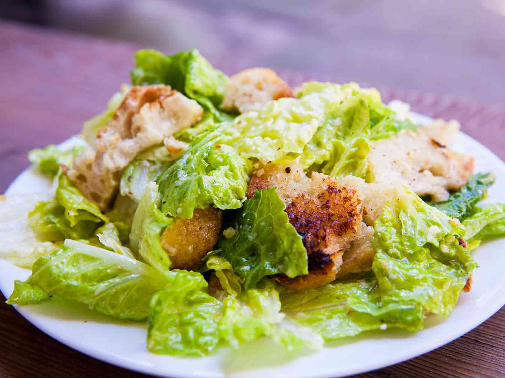

Caesar Salad

Description
This creamy, savoury dressing and crisp Romaine are the perfect
accompaniment to grilled chicken. Or better yet, a steak.
Ingredients
- 1 head Romaine lettuce, torn, washed, and dried
- Pre-made Croutons
- 1/3 cup extra virgin olive
- 3 cloves garlic, crushed or minced
- 1 tbsp Dijon mustard
- 2 tsp Kosher salt
- 1 tsp Worchestershire sauce
- 1/2 tsp red wine vinegar
- Juice of half a lemon
- 2 cm ribbon anchovy paste
- 1 egg
- 1/4 cup grated parmesan cheese
Steps
- Combine olive oil, garlic, Dijon mustard, anchovy paste, Worchestershire,
red wine vinegar, and salt in a large bowl, and whisk to combine
- Add egg and lemon juice, whisk vigorously
- Add Romaine lettuce, croutons and parmesan, toss to combine and serve immediately
Back to main